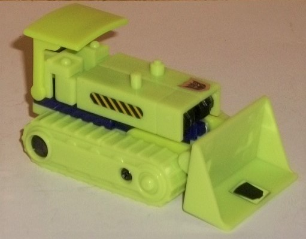 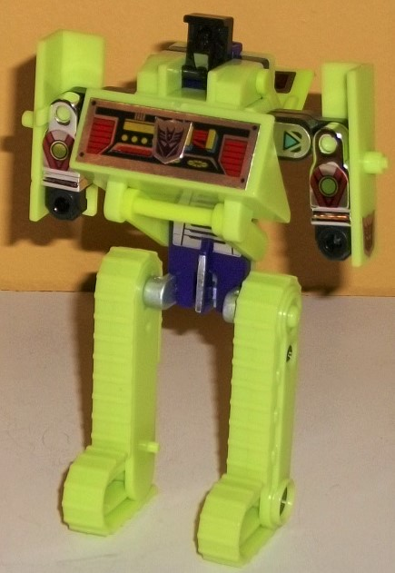
Difficulty of Transformation : Easy
Individual Rating : 5.6
Allegiances
: Decepticon
Set Price
: $74 (U.S.)
Color Scheme
: Light lime green,
dark purple, and some chrome silver, pale yellow, metallic gunmetal gray,
and black
Overall Rating
: 6.0
 Bonecrusher
Bonecrusher
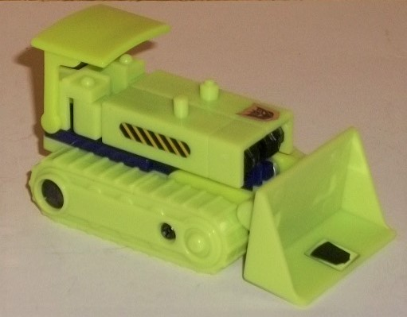
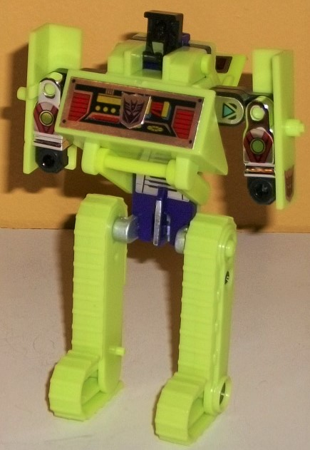
Difficulty of Transformation
: Easy
Individual Rating
: 5.6
Bonecrusher is the bulldozer
of the bunch, and compared to the other G1 Constructicons, his vehicle
mode is a little on the weak end. Mind you, it's still pretty strong overall--
the proportions are fairly real-world, in terms of the shovel to the treads
to the body and all that. However, the drivers' cockpit section is a bit
weak, basically consisting of a "canopy" roof piece covering up where the
shoulders connect to the body and the top of the headpiece. (Of course,
some bulldozers don't need an enclosed cockpit, but there's no seat molded
in there either.) There also aren't any wheels on the bottom of the treads
to move Bonecrusher along, so wheeling him along at all. Bonecrusher is
also a bit sparse on mold detailing, even by the standards of his fellow
Consructicons-- beyond some exhaust pipes, there's almost no mold detailing
on the body outside of simple geometric shapes until you get down to the
treads (which themselves are detailed decently well). Additionally, even
though the Constructicons are all mostly green in vehicle mode, Bonecrusher
is very nearly ALL green, minus some very small pieces from robot mode,
like the fists which can be seen behind the front shovel. For stickers,
there's a Decepticon symbol on the left side, a rub allegiance symbol on
the shovel, and some small yellow-and-black "caution line" stickers on
the sides of the body. If you desire, Bonecrusher can fit the lower arm
piece onto the top of the main body of this mode, giving it some purple
in this mode, but it honestly looks ridiculous and oversized, and covers
up any theoretical driver's ability to see out the front. You can swap
out the hand from the gestalt mode for a drill or dual-drill piece.
To transform Bonecrusher,
the body splits out to the sides to become his arms, the roof folds back
and his robot head folds up, the treads swing forward, elongate, and rotate
to become his legs, and the shovel comes up over the top to form the chest.
The end result is...
okay,
I guess,
by G1 standards and for
the size, but definitely has some major proportional maladies, especially
by today's standards. The tread-legs are stick-thin from the front, and
having the feet also just made of the treads abruptly turning and elongating-
with a noticeable gap in the middle-- doesn't look good from the sides,
either. The waist is incredibly flat and thin, with a barrel chest made
of the shovel. The arms are the weakest part of the toy, as nearly as much
of length of the arms is from the jutting OUT from the body as they do
DOWN! It looks very odd, and the vehicle body-halves hanging off the "lower"
arms (really almost all the visible portion of the arms) don't help. The
roof just kinda hangs behind Bonecrusher's back, not really contributing
to anything and being an obvious piece of kibble, albeit a relatively minor
one. The head, interestingly, is a big departure from the show model (which
of course came later), instead having some minor curved forehead-like details
leading to a large square singular eye, with no mouth or face to speak
of. He still is almost entirely visibly green in this mode, with his lower
waist the only obvious bit of purple, and some small pieces like his head
and arms providing a bit of black. Stickers are more obvious in this mode,
with your usual G1 decal simple geometric robotic shapes-- some circles
on the lower arms and triangles on the upper arms, some vent-details on
the stomach, and many robotic details on the chest, partially covered by
another Decepticon symbol sticker for some reason. There's also another
small detail sticker on the underside of the roof behind his head. For
articulation in this mode, Bonecrusher can move at the shoulders (at two
points), and where the lower arms meet the upper arms-- shoulders, elbows,
I'm not sure what you'd call those joints... That's it, though. You'd think
his legs could move at the hips, but nope. As with all the other Constructicons,
Bonecrusher comes with a small gun (not storable in any other mode, grrr)
which can fit in either of his fists in this mode. (I tried VERY hard to
fish out all the Constructicon guns for these pics, but they're just too
tiny and most of them are black. I included the pic of them in the tray
later in the review if you want to see all the "extra" parts separately.
Thanks,
Bwtf.com
!)
Bonecrusher forms the
left arm of Devastator.
 Constructicon
Hook
Constructicon
Hook
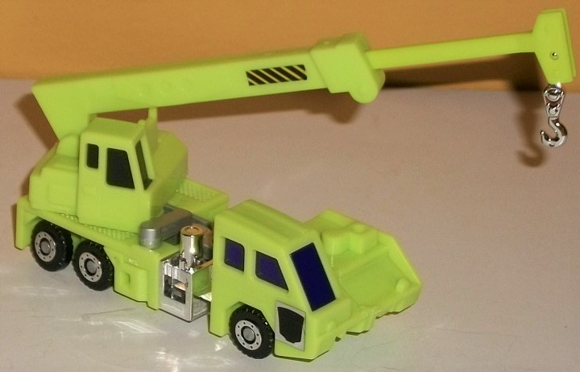
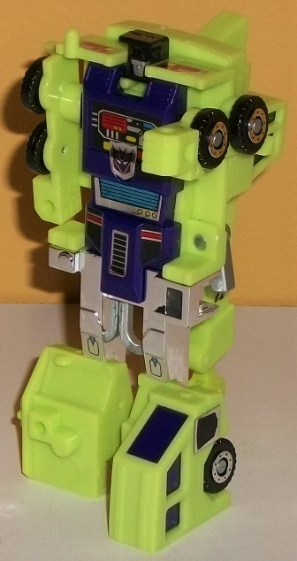
Difficulty of Transformation
: Very
Easy
Individual Rating
: 5.8
Hook's alternate mode
is, appropriately, a crane. The proportions are generally okay for Hook
in this mode, though the crane arm should realistically be longer-- however,
this is an issue with pretty much every Transformer with a crane as an
alt mode, as there's usually only so many times you can collapse the crane
arm into itself on a toy budget. The front and back section of the crane
are pretty solid, with some basic details like some drivers' doors, armored
paneling, and the like-- nothing beyond those basics, though. The middle
section is where Hook suffers from having to split basically in two for
combiner mode-- there's a big ugly silver slider there in the middle, with
a little combiner arm port just kinda hangin' out there in the center.
The front-middle section is also skinnier than it should be, not really
fitting with the width of the rest of the mode. As with the rest of the
Constructicons, Hook is mostly lime green in this mode, but beyond the
wheels, his front windows are purple (though his back windows are black,
oddly), and there's some chrome silver on his crane hook and wheel hubs,
as well. Hook's stickers are a little sparse in this mode-- just a rub
allegiance symbol on the side of the front cockpit, a Decepticon symbol
on the opposite side, two small "caution line" stickers on the sides of
the crane arm, and two "taillight" stickers on the back end. Hook's crane
arm can not only move up and down and extend out about another third of
its length, but the hook is also on its own swinging joint, and the back
portion of the crane can rotate, which I wasn't necessarily expecting for
a G1 toy of this size. Unlike with some of the other Constructicons, both
Hook's "combiner part" (the Devastator head and upper back/neck) and his
personal pistol can plug onto the top of this mode. The pistol fits quite
well on one side of the front portion, and although the big purple/black
Devastator head piece does cover up that unsightly silver portion in the
middle of this mode, it's still so bulky it looks out of place, and it's
not like the head folds out of the way all that convincingly-- it just
looks down. It also severely restricts the rotation of the back arm portion.
I prefer to leave off the combiner portion, even if it does expose the
silver parts underneath.
Hook's transformation
is very simple-- just extend out and fold out the front parts of the vehicle
mode to become the robot legs, slide out the arms from the sides, and then
fold up the small black portion of the back section to become his head,
and you're done. The end result is... well, the body looks good, at least.
It IS a bit long/tall, but the body has some nice sticker details in this
mode (actually, it has ALL of the sticker details in this mode, beyond
the small oval stickers on the knees)-- some circuitry details on the chest
(partially covered by a Decepticon symbol), a vent-like detail on the abs
and crotch, and headlight-like details on the sides of the waist. The purple
on the body and silver on the upper legs helps to break up the green better
in this mode than in alt mode. The arms are too skinny, just being made
up of the sides of the vehicle, and the fists are a bit oversized for the
arms and overly simply detailed, as well. The feet might be okay if they
were closer to the same size, but because of the asymmetrical look of the
alt mode, the left foot is WAY bigger than the right. The upper legs are
also too skinny, though this is the norm on a lot of G1 toys. The head
is also too small, but the details on it are pretty decent-- inside his
square head and forehead piece, he's got a rounded, ridged forehead, a
visor, and a "normal" nose and mouth. (Oddly, his visor is painted the
same silver as his face.) The rear portion of the vehicle mode/crane arm
just hangs off the back of Hook, but given the alt mode I'm not sure what
else they realistically could have done with it, and it doesn't really
get in the way of articulation or balance much. Speaking of articulation,
in this mode Hook can move back-and-forth at the shoulders, and back at
the knees (though if they're in any position but the "standing up" pose,
they're loose).
Hook forms the upper
body of Devastator.
 Constructicon
Scavenger
Constructicon
Scavenger
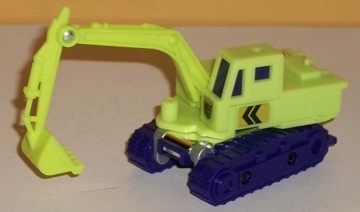
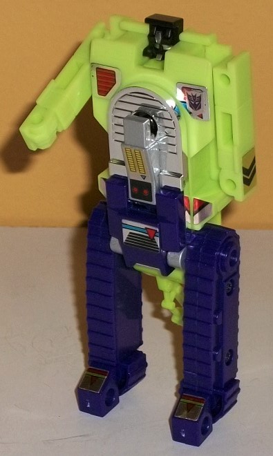
Difficulty of Transformation
: Very
Easy
Individual Rating
: 6.6
Scavenger's alt mode
is a steam shovel, and it's represented pretty darned well overall proportionally.
In reality the arm of the vehicle should be a bit beefier and longer, but
given how much that would impair the other modes making it this size is
still okay, in my book. As with the other Constructicons, again the mold
detailing is minimal on the body, but the arm is pretty well-detailed,
with hydraulic cylinders, the edge of the shovel, and the like all well-detailed.
The treads are also pretty nicely detailed, though like with Bonecrusher
there aren't any wheels on the underside to allow Scavenger to roll along
or anything. The color breakup is a bit better on Scavenger than on most
of other Constructicons-- he's definitely mostly lime green in this mode,
but his windows and his treads are purple, balancing out things a bit better.
In this mode Scavenger has some caution "arrow" stickers on the sides,
a Decepticon symbol underneath the cockpit, and a rub allegiance symbol
on the top of the right rear end. Scavenger's the most articulated of the
G1 Constructicons in alt mode, with the ability to move at the arm at two
places, as well as the whole body to rotate 360 degrees on top of the treads,
which is a nice, unexpected feature. You can also mount the combiner lower
arm piece onto the top right side of this mode, replacing the fist with
a drill (in fact it's required on Scavenger-- there's not enough room for
the fist to fit in its launcher here). Unlike on Bonecrusher where it seems
ridiculous in its placement given it blocks view of the cockpit, here it
actually fits in rather well in my opinion, not really blocking anything
else.
Scavenger's transformation
is easy-- just rotate the tread pieces out, and then rotate the front parts
around to reveal feet pieces. Then slide the arms out from the sides of
the body and flip open the head, and you're done. Granted, this does mean
that much of Scavenger's alt mode is just on his back, most notably the
shovel arm, which just kinda hangs down from his butt. It's definitely
some kibble that doesn't look great (especially from a side view), though
if you move it downwards it can make him more stable, giving him essentially
a "third leg". The proportions for the legs look pretty good (especially
for a G1 toy)-- a bit stiff, but still good, with the blocks for the feet
looking much better than Bonecrusher's elongated tread-feet. The body is
a bit long, though, especially in comparison to the head and arms, which
are definitely undersized. The arms are also too skinny proportionally.
The head's detailing gives Scavenger three small forehead crests inside
his black "block", with two yellow eyes and an angled faceplate as opposed
to a mouth. For stickers, Bonecrusher has a few more in this mode-- one
on each "pec", with some vent details and another Decepticon logo on top
of the left one; some button and triangular details on his lower body;
a vent detail on his crotch; and some triangular details on the top of
his feet. His color breakup is also decent in this mode-- basically his
lower body is purple and his upper body green, with some chrome silver
in the middle. For articulation, he can move back-and-forth at the shoulders,
and his feet can move at two points at each ankle, due to the transformation.
As with the other Constructicons, he has his own small pistol he can hold
in this mode, unstorable in his other modes.
Scavenger forms the
right arm of Devastator.
 Long
Haul
Long
Haul
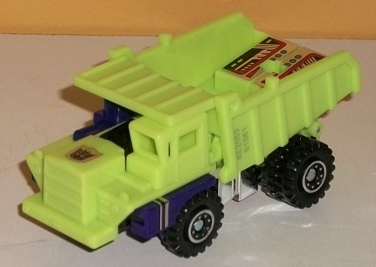
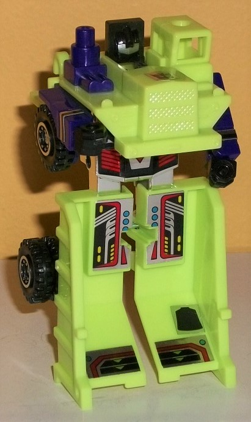
Difficulty of Transformation
: Very
Easy
Individual Rating
: 5.7
Long Haul's dump truck
alt mode is the worst of the G1 Constructicons', though it's still okay.
However, the proportions are definitely off to a noticeable extent-- the
front nose of the truck is a bit too long overall compared to the length
of the truck bed. The sides of the arms and the legs are also pretty easily
visible from the side as extras too, so in general this mode looks considerably
better from the front than the side. There's also no real back end to the
dump truck, as the truck bed becomes the robot legs, so it has to swivel
down and on top of the robot upper legs on the back. Basically all you
can see back there is the back of the truck bed and the leg stumps. The
mold detailing on Long Haul is pretty good compared to his Constructicon
brethren, though. Beyond some basic dump truck "lines" on the roof and
sides of the bed, there's a pretty nice detailed "mesh" on the front grill,
and multiple small headlight details on the front side. The tires also
have nice 'n thick treads-- the rear wheels are actually TWO wheels each,
right next to each other, to help give them additional thickness. As with
the other Constructicons, Long Haul's mostly green in this mode, but a
bit of purple peeks on the side parts that become the arms, as well as
on the exhaust pipe on the right side. The chrome silver on the robot legs
on the bottom and wheel hubs also looks nice, and there's a bit of black
on said wheels and in the middle of the front portion that becomes his
robot head. Stickers are aplenty in this mode, given how much of it is
also visible in robot mode-- he's got a Decepticon symbol sticker right
smack dab in the middle of the front section, a rub allegiance symbol on
the diagonal front portion of the truck bed, and four rather detailed stickers
on other portions of the truck bed, with various robotic and vent details
on them. There's also small silver-and-purple stripe decals on the parts
that become his robot arms. Long Haul comes with a small pistol, as well
as Devastator's upper-legs piece and waist piece. The pistol unfortunately
can't fit in this mode-- only into one of his fists in robot mode-- but
the two combiner parts can stack on top of Long Haul's rear portion in
this mode. It looks a bit odd, but the two guns on the side of the upper
legs piece help make this extra piece look at least a little better stacked
on top of a dump truck-- giving him some firepower, at least... Oh, and
the truck bed can lift backwards like on a real dump truck, but only if
you hold both halves together-- due to the transformation, they'll hang
loosely separately due to the fact they become legs.
To transform Long Haul
to robot mode, you slide out the arms from the sides and unfold the fists;
fold the truck bed and waist down and forward to become the lower body
and legs; pop back the roof portion; and then pop up Long Haul's head.
Long Haul definitely has some odd proportions as a result-- he's INCREDIBLY
barrel-chested in this mode, given that the entire front half of the dump
truck sticks out in front of his little skinny head. The arms are also
a bit skinny with no visible elbows, but then again this is pretty typical
for a G1 toy. The lower legs are also VERY large and wide, to the point
where he doesn't really have any upper legs-- the toy goes almost straight
from the waist to the feet. The wide feet do make him very stable, though,
and the only piece of kibble he has is his roof behind his back, which
is relatively small and honestly isn't a big deal. Given how much of his
vehicle mode is still visible here, there isn't much new to talk about
when it comes to detailing, and his color breakup is the same. His small,
flat head piece is way too small, but it does have some nice mold detailing
in it, with a curved forehead, a large visor, and a relatively small faceplate.
His fists are actually actual fists, and not just molded into the side
of his arm pieces, which is always a good thing. His chrome silver waist
has the only "new" sticker visible in this mode-- a primarily red sticker
with vents on the side and an arrow above the center. For articulation
in this mode, Long Haul can move back-and-forth at the shoulders, inwards
at the wrists, and back at each leg at the knee-- though due to the transformation,
they're loose if they're not straight down in his "standing" position.
Long Haul forms the
lower body & upper legs of Devastator.
 Mixmaster
Mixmaster
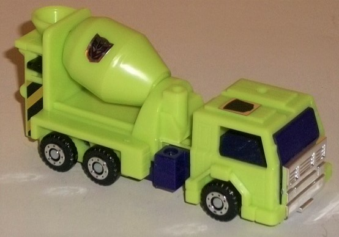
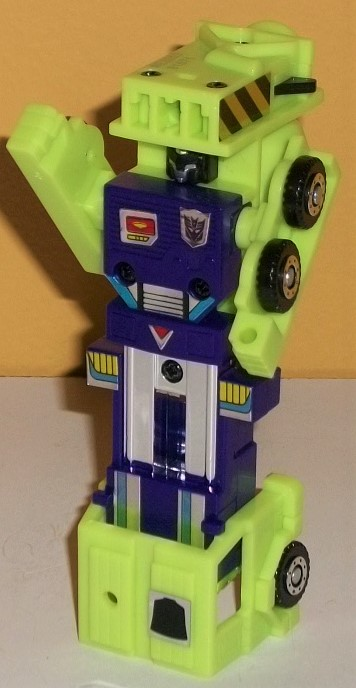
Difficulty of Transformation
: Very
Easy
Individual Rating
: 5.5
Mixmaster's alternate
mode is, appropriately, a cement truck. As alt modes go, this one is MOSTLY
good, though you can see a bit of the upper robot legs behind the front
section, but in front of the mixing barrel. There's small purple blocks
to the sides of this upper leg section to kind of make it less obvious
from a side view-- and it largely works-- and it is a relatively minor
extra, but it is still there. The proportions are a little off for this
mode, as the cab should likely be a bit smaller and the mixing drum portion
a bit larger, but it's not TOO bad. The mold detailing is pretty simple
like on the other G1 Constructicons, with mostly just the basic geometric
shapes present-- even the cement funnel on the back end is very basic and
two-dimensional. The front bumper at least has some grill detailing, though,
and the wheels are nice and treaded with chromed hubs. The vast majority
of this mode is green, but the purple front window and small side sections,
as well as the black-and-chrome wheels and chrome grill, help to break
up things some. I wish the barrel was purple, though, for some added contrast.
For stickers, Mixmaster has a Decepticon symbol on his mixing drum, a rub
allegiance symbol on the right side of the front end, and "caution" stripes
on the rear end on the sides of the funnel detailing. (The barrel can rotate
in place, FYI.) In addition to his normal pistol, Mixmaster also comes
with the combiner weapon, both of which can thankfully peg into the top
of this mode-- and, since they're both guns, they give him some added firepower,
too.
Mixmaster's transformation
is very simple-- just fold out and down the cab section to become his feet,
then slide out the sides of the body to become the arms. That's it. This
mode has some pretty big proportional problems. The arms-- like most formed
out of the sides of vehicle modes-- are skinny and two-dimensional, not
to mention that the fists are the only part of them that don't have wheels
making up half the width of said arm. The legs are too long proportionally--
and for the sake of this being a G1 toy, I'll try my best to ignore that
both legs are just one long block, as that's the usual for a lot of smaller
toys back then, but man it is a bummer. The chest is also just a complete
square, just as wide as the legs-- too simple even by G1 molding standards.
The head is also just molded onto the underside of the entire rear section
of the vehicle mode, which sticks pretty far back from Mixmaster's head,
along with the mixing drum-- this is definitely a toy meant to be looked
at from the front, not the sides. Still, on the plus side the purple and
chrome silver on the main body and legs makes Mixmaster's color breakup
pretty good in this mode, and his head is detailed pretty well for a G1
toy of this size-- he's got a small silver indentation in the middle of
his forehead, two yellow eyes, and a "normal" silver face and mouth. There's
also a pretty good number of stickers on his body-- a Decepticon symbol
and some square details on his chest; four stickers showing triangular
shapes and a vent on his waist; two vent-like details on his upper legs;
and two stripe stickers on his lower legs. Additionally, a rather cool
feature is that the area above Mixmaster's head can house one of the missile/drill
pieces that come with the Constructicons (though because of safety laws,
this reissue can't actually shoot them via the trigger). So if you want,
you can have Mixmaster with a giant combiner fist above his head, which
is pretty darned cool. Oh, and he can hold Devastator's weapon as well
as his own in this mode, though of course the combiner weapon is ludicrously
big compared to him. For articulation in this mode, Mixmaster can only
move his arms back-and-forth at the elbow-shoulders (that is, the shoulders
that actually attach to his arms around the elbows).
 Scrapper
Scrapper
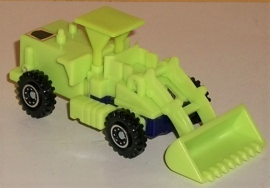
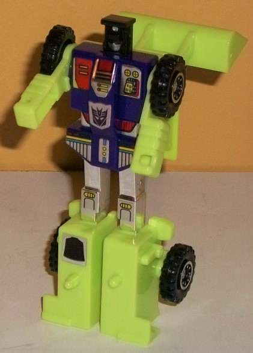
Difficulty of Transformation
: Very
Easy
Individual Rating
: 6.7
Scrapper's alternate
mode is an earth mover, and the proportions are fairly spot-on, though
the way the robot arms just hang at the front sides is a bit of an eyesore
and not something typically seen in early G1 alt modes. On the back end,
you can see little holes in the back bumper necessary for the transformation
since Scrapper's lower legs fold out from there, but that's a relatively
minor issue. I do dislike how simple most of Scrapper is, though-- the
mold detailing is pretty minimal in this mode, even compared to most of
his fellow G1 Constructicons. There's two small pipes on the back section,
and his wheels are detailed nicely enough with treads and chrome silver
hubs. There's also some some nice hinges molded into the upper portion
of his shovel-arm, but that's about it-- everything else is just the bare-bones
basic shapes needed to create the alt mode, and nothing else. The color
scheme is also pretty much all green in this mode, with the wheels being
the only real exception. The lack of stickers beyond the Decepticon allegiance
symbol on the front hood and the rub allegiance symbol on the back right
portion also contribute to a rather boring, bland alt mode without anything
to really draw the eye. What IS cool, however, is that the extra combiner
piece that comes with Scrapper-- the Devastator chest plate-- can plug
into the top of this mode. Normally these extra pieces are overly bulky
and cumbersome, but the chest plate stuck onto the back top like it is
looks like a pair of wings, making Scrapper the only flying construction
vehicle, I guess? Kinda weird, but cool. Scrapper can move his shovel arm
up and down in this mode where it connects to the body.
Transforming Scrapper
to robot mode is pretty simple-- just fold out and back the rear section
to become his legs, fold back the shovel, and pop up the head, and you're
done. The arms stay where they were in vehicle mode, so no transformation
needed there. The result is above-average for the team, with relatively
normal proportions. The arms are a bit overly blocky and short, but they're
not that bad, particularly for a G1 figure. The legs are pretty good, with
the upper legs actually being a pretty decent length and not just completely
dwarfed by the lower legs this time. There is the cockpit section and shovel
behind Scrapper's back, however-- the shovel is particularly egregious,
sitting REALLY far back, and unable to collapse further into the back like
you'd think. At least his large feet keep this from making him unstable.
The chest is pretty well-proportioned, and accounts for nearly all of the
stickers on Scrapper-- TOO much, I'd say, as it's too focused here and
not enough on, say, the vehicle mode. There's various circuitry and vent
details on EIGHT separate stickers on his chest and waist, and two more
stickers on his knees. The headsculpt is decent, with a sloped forehead
with a small silver segment on the top, a visor segmented slightly into
eye-like details, and a silver faceplate with chin guards on the sides.
I do wish the silver paint extended into his visor, though, or at least
some red or yellow had been painted there instead of it being black. For
articulation in this mode, Scrapper can move back-and-forth at the shoulders
and at the knees, though due to the transformation if his knees are in
any position other than standing, they're loose. As with the other Constructicons,
Scrapper comes with a small pistol that can be held in either of his hands
in this mode, but isn't storable in vehicle mode for him.
Scrapper forms the right
leg of Devastator.
 Devastator
(Combined Form)
Devastator
(Combined Form)
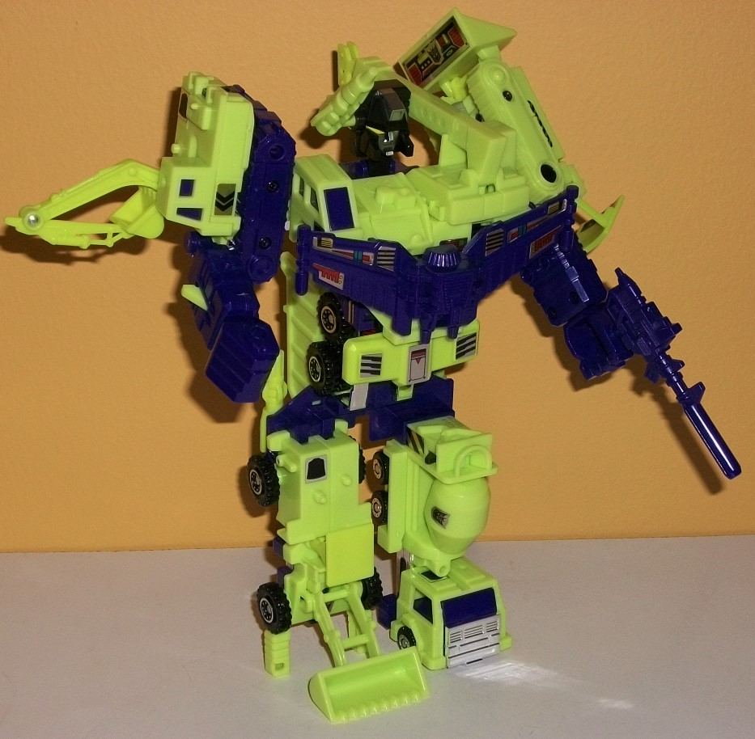
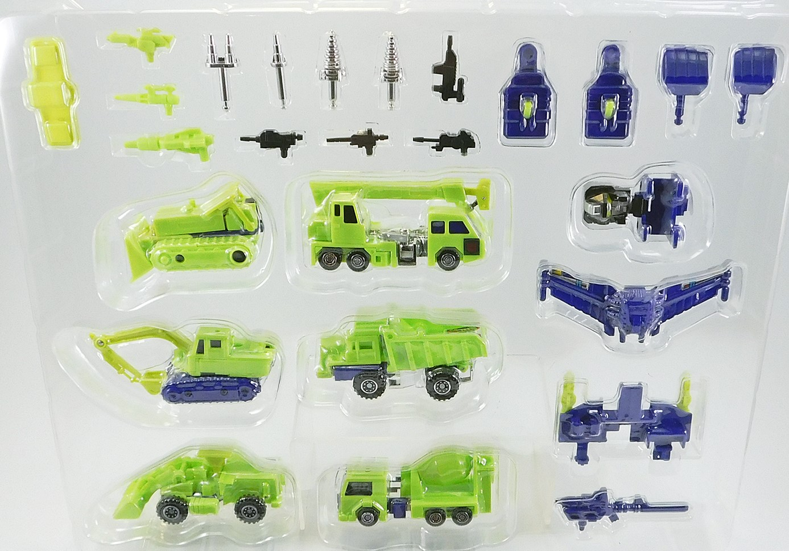
Difficulty of Transformation
: Hard
Individual Rating
: 6.0
For all of the Transformers
media touting Devastator as one of the biggest combiners (because he's
6 TFs instead of the usual 5), his original toy is actually one of the
smallest G1 combiners-- about the same total mass as a modern Leader-class
Transformer. Like many G1 combiners, Devastator is very part-formery, with
his upper legs, crotch plate, chest, head, and lower arms all not part
of any of the individual 6 Constructicons, but instead added on during
the combination sequence (or awkwardly on the individual vehicle modes).
His lower arms are rather unique-- the fists are "projectiles" of sorts,
and if you want you can pop them out using the green triggers on the lower
arms and replace them with his various chrome silver drill pieces. Unfortunately,
there's a bunch of parts you can't add on to this mode, and just have to
leave off separately (as is the case with basically every other G1 combiner)--
beyond whatever hand parts you're not using, each Constructicon's individual
weapon can't be used in this mode. There is a larger gun that fits into
one of his fists perfectly, though, and a green gun that, oddly enough,
fits into the side of his forehead. Kinda weird, but hey, at least it's
unique. Proportionally Devastator has some issues. His lower arms are too
small compared to his upper arms, even by Transformer standards. His head
is waaay far back compared to his barrel chest, though his waist is pretty
well-proportioned. His lower legs are also way too far back and small compared
to the more appropriately-sized lower legs, which can cause him to look
a bit forward and down. (Don't look at this toy from the side, that's for
sure.) I'm not fond of how the entire shovel arm of Scavenger just hangs
off the right shoulder, and I wish Hook's crane arm could fold into the
main body more. (I'm not opposed to asymmetrical TFs, but these big extras
just look a bit too awkward.) The headsculpt for Devastator is pretty typical
G1-- the basic details of the mouth and eyes are here, but the yellow eyes
are a bit too large, and the lines are a bit TOO straight, with no real
personality to it. The gunmetal gray paint on the mouth and forehead look
great, though. Since all the Constructicons have the same color scheme,
of course Devastator's colors are nice and uniform, with the purple of
much of the extra combiner parts helping to offset all the lime green of
the Constructicon toys proper, and with a bit of black and sticker apps
used here and there to break things up a bit more. All in all though, Devastator
looks a bit underwhelming compared to most modern combiners especially,
but even compared to most other G1 gestalts his proportions are a bit off.
He's also not the most stable-- Mixmaster's foot doesn't really have a
heel, making Scrapper kind of solely responsible for keeping him upright
(and of course there's the aforementioned "leaning" of the toy forward
that can easily happen). For articulation he can only move at the shoulders--
up and down as well as back and forward slightly due to the connections,
even if the connections themselves are skinny and not the most stable.
His arms can also move back-and-forth at the elbows, and can rotate at
the wrists. His head can move up-and-down slightly at the neck, and...
that's it. No leg articulation whatsoever, though for G1 gestalts this
isn't a surprise.
Overall, the G1 Devastator
reissue set was more of a curiosity than a must-have at the point it was
released (in late 2017). The original toy may have been okay back in the
day, but the simplistic detailing, small size compared to other combiners,
tons of non-storable extra parts, iffy stability in combined mode, and
awkward proportions for many of the individual robots make it only a recommendation
for those who want to "see how it all began". Devastator's been done better
multiple times since this freshman version, and done considerably better
(the most notable being the
Titan Combiner
Wars set
). I'd recommend... well, ANY other G1-ish Devastator set to
this one, even if they're
repaints of other
toys
.
Reviews by Beastbot
(Pic of toys-in-package from Bwtf.com )